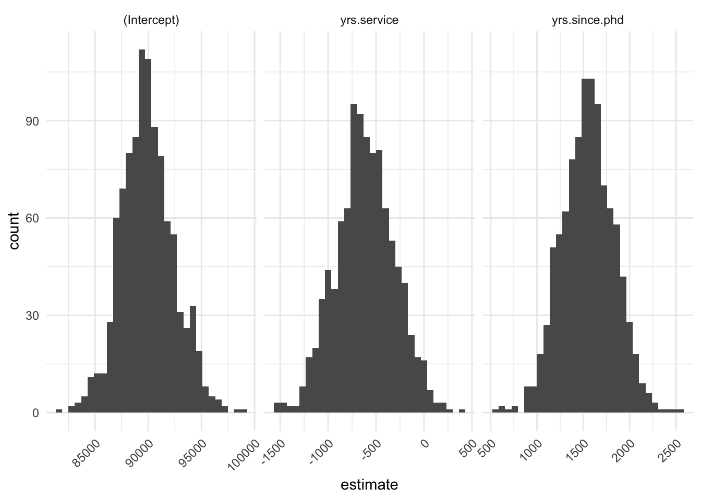
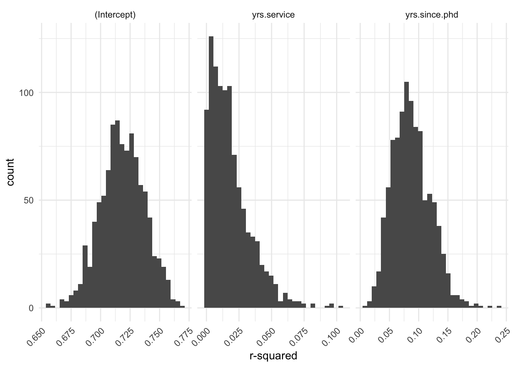

Chapter 2 Bootstrap
## ── Attaching packages ────────## ✔ ggplot2 3.2.1 ✔ purrr 0.3.2
## ✔ tibble 2.1.3 ✔ dplyr 0.8.3
## ✔ tidyr 0.8.3 ✔ stringr 1.4.0
## ✔ readr 1.3.1 ✔ forcats 0.4.0## ── Conflicts ─────────────────
## ✖ dplyr::filter() masks stats::filter()
## ✖ dplyr::lag() masks stats::lag()## Warning: replacing previous import 'dplyr::group_rows' by
## 'kableExtra::group_rows' when loading 'eepR'## Warning: replacing previous import 'foreach::when' by 'purrr::when' when
## loading 'eepR'## Warning: replacing previous import 'foreach::accumulate' by
## 'purrr::accumulate' when loading 'eepR'2.1 Simple Linear Regression
2.1.1 Run Original Model
## # A tibble: 3 x 5
## term estimate std.error statistic p.value
## <chr> <dbl> <dbl> <dbl> <dbl>
## 1 (Intercept) 89912. 2844. 31.6 3.81e-110
## 2 yrs.since.phd 1563. 257. 6.09 2.75e- 9
## 3 yrs.service -629. 254. -2.47 1.38e- 22.1.2 Bootstrap
# set number of bootstraps
n_bootstrap <- 1000
# create empty dataframes for coefficients and r-squared
bootstrap_coef <- tibble(n_iter = NA,
.rows = n_bootstrap)
bootstrap_rsq <- tibble(n_iter = NA,
.rows = n_bootstrap)
# for loop for bootstrap
for (i in 1:n_bootstrap) {
# randomly sample with replacement from the rows
idx <- sample(1:nrow(df), nrow(df), replace = T)
df_boot <- df[idx,]
# run linear model
model_boot <- lm(salary ~ yrs.since.phd + yrs.service, df_boot)
# obtain clean coefficients table
tidy_boot <- tidy(model_boot)
# extract estimates and r^2 value
summary_model <- summary(model_boot)
t_stat <- tidy_boot$statistic
df_denom <- summary_model$df[[2]]
r_sq <- t_stat^2 / (t_stat^2 + df_denom)
# write bootstrap iteration
bootstrap_coef[i, 1] <- i
bootstrap_rsq[i, 1] <- i
# determine number of coefficients
n_coef <- nrow(tidy_boot)
# write estimate and r^2 to table for looping across variables
for (j in 1:n_coef) {
# bootstrap estimate confidence interval
bootstrap_coef[i, tidy_boot$term[j]] <- tidy_boot$estimate[j]
# bootstrap R^2 CI
bootstrap_rsq[i, tidy_boot$term[j]] <- r_sq[j]
}
}
# print estimate CI and R^2 CI for each variable
for (k in 1:n_coef) {
# obtain 95% estimate ci
bootstrap_ci <- quantile(as.matrix(bootstrap_coef[,(k+1)]), probs = c(0.025, .975))
# obtain 95% r^2 ci
bootstrap_rsq_ci <- quantile(as.matrix(bootstrap_rsq[,(k+1)]), probs = c(0.025, .975))
# add to tidy table
tidy[k, "estimate_95_ci_ll"] <- bootstrap_ci[1]
tidy[k, "estimate_95_ci_ul"] <- bootstrap_ci[2]
tidy[k, "rsq_95_ci_ll"] <- bootstrap_rsq_ci[1]
tidy[k, "rsq_95_ci_ul"] <- bootstrap_rsq_ci[2]
}
tidy %>%
nice_table_html()| term | estimate | std.error | statistic | p.value | estimate_95_ci_ll | estimate_95_ci_ul | rsq_95_ci_ll | rsq_95_ci_ul |
|---|---|---|---|---|---|---|---|---|
| (Intercept) | 89912.1845 | 2843.5599 | 31.619586 | 0.0000000 | 85095.316 | 94897.47876 | 0.6813993 | 0.7543248 |
| yrs.since.phd | 1562.8889 | 256.8196 | 6.085551 | 0.0000000 | 1014.798 | 2082.53845 | 0.0328743 | 0.1540771 |
| yrs.service | -629.1014 | 254.4694 | -2.472208 | 0.0138496 | -1196.224 | -16.81245 | 0.0001348 | 0.0584176 |
2.1.3 Bootstrap Estimate
bootstrap_coef %>%
gather(., "term", "coef", -n_iter) %>%
ggplot(., aes(coef)) +
geom_histogram() +
facet_wrap(~ term, scales = "free_x") +
theme_minimal() +
theme(axis.text.x = element_text(hjust = 1, angle = 45)) + labs(x = "estimate")## `stat_bin()` using `bins = 30`. Pick better value with `binwidth`.
2.1.4 Bootstrap \(R^2\)
bootstrap_rsq %>%
gather(., "term", "coef", -n_iter) %>%
ggplot(., aes(coef)) +
geom_histogram() +
facet_wrap(~ term, scales = "free_x") +
theme_minimal() +
theme(axis.text.x = element_text(hjust = 1, angle = 45)) +
labs(x = "r-squared")## `stat_bin()` using `bins = 30`. Pick better value with `binwidth`.